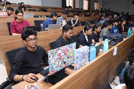
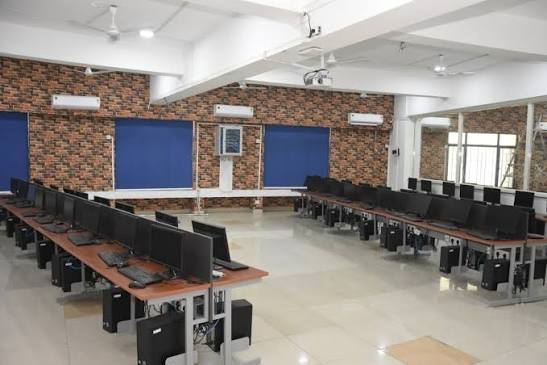
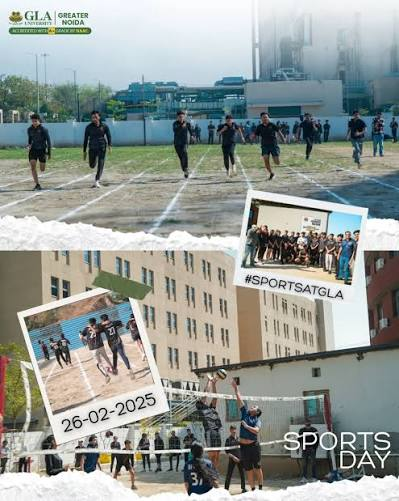

Welcome to the GLA University Information Portal, a simple HTML-based page providing information about academics, campus facilities, student life and admissions.
GLA University is a higher education institution focused on providing students with academic knowledge, practical skills and opportunities for personal development. The university offers programs in several areas including engineering, management, pharmacy and computer science.
The institution encourages students to participate in academic projects, technical activities and extracurricular events. Its learning environment aims to prepare students for professional careers and further education.
The university's academic approach combines theoretical concepts with practical learning. Students are encouraged to develop problem-solving abilities and apply their knowledge to real-world situations.
Official GLA University Website
Welcome to GLA University. Education is not limited to textbooks and examinations. Students should develop curiosity, creativity and the confidence to solve problems independently.
We encourage every student to take advantage of academic resources, participate in projects and develop skills that will help them contribute positively to the technology and professional world.
“Learning becomes meaningful when knowledge is applied.”

GLA University offers undergraduate and postgraduate programs across different disciplines. Students can choose programs related to engineering, computer science, management, pharmacy and other academic fields.
The B.Tech in Computer Science and Engineering provides students with knowledge of programming, algorithms, databases, computer systems and software development.
Students interested in AI and ML can explore areas such as machine learning, data analysis, artificial intelligence and intelligent applications.
A basic example of a mathematical expression used in computing is:
E = mc2
Water is represented chemically as H2O.
Academic programs are designed to combine theoretical learning with practical knowledge.

The campus provides facilities that support both academic learning and student activities. These include classrooms, computer laboratories, libraries and spaces for technical activities.
Modern computer facilities are particularly useful for students studying computer science, artificial intelligence and machine learning.
Students can use these resources for programming practice, academic projects, research and other learning activities.

Student life at a university involves much more than classroom learning. Students can participate in technical events, cultural activities, competitions and other campus programs.
Technical festivals and student activities provide opportunities to develop teamwork, communication and leadership skills. These experiences can help students become more confident and independent.
Students can also work together on projects and share their knowledge with their classmates.
Students interested in joining GLA University should check the official admission information for eligibility requirements, available programs, application procedures and important dates.
Applicants should verify admission deadlines and eligibility requirements on the official university website before applying.
Admission information can be accessed through the official website:
Important Notice: Students should regularly check official university announcements for information about examinations, academic schedules, events and other important activities.
Always verify important information through official university sources rather than relying on unverified messages.
Students can check the official university website for the latest announcements and information.
GLA University
Mathura, Uttar Pradesh, India
Email: info@gla.ac.in
Website: www.gla.ac.in
Contact University by Email
Official Website
GLA University
Admission Portal
Student Information
Python Academic Resource
Student GitHub Profile
A simple example of programming syntax that a computer science student might learn is shown below:
name = "Aradhya"
course = "CSE AI-ML"
print("Student:", name)
print("Course:", course)